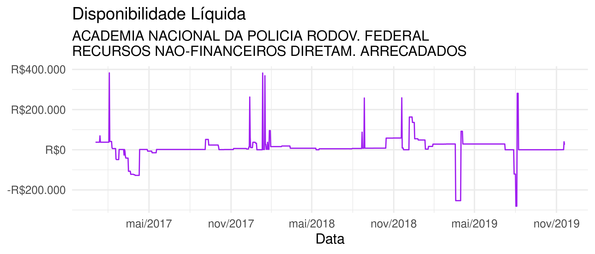

# install.packages("devtools") devtools::install_github("curso-r/empocamento")
O pacote traz extrações de movimentações diárias dos ministérios da Justiça (movimentacoes_diarias_mj) e da Educação (movimentacoes_diarias_mec). A série histórica são dos itens:
LIMITES DE SAQUE (OFSS, DIVIDA, BACEN E PREV));VALORES LIQUIDADOS A PAGAR (EXERCICIO + RP)); ePAGAMENTOS TOTAIS (EXERCICIO E RAP))series_mj_filtrada <- series_mj %>% filter( NO_ORGAO_MAXI == "MINISTERIO DA JUSTICA E SEGURANCA PUBLICA", NO_ORGAO == "DEPARTAMENTO DE POLICIA RODOVIARIA FEDERAL/MJ", NO_UG == "ACADEMIA NACIONAL DA POLICIA RODOV. FEDERAL", NO_FONTE_RECURSO == "RECURSOS NAO-FINANCEIROS DIRETAM. ARRECADADOS" ) series_mj_filtrada$series_temporais[[1]] %>% ggplot(aes(x = NO_DIA_COMPLETO_dmy, y = disponibilidade_liquida)) + geom_line()

Explorar as séries de fluxo de caixa com interface gráfica (Shiny app)
explorar(series_mj)
O pacote traz função pronta para extrair alguns descritores sobre o perfil histórico de cada UG-FONTE.
descritores_mj <- adiciona_descritores(series_mj) #> [13:18:54] WARNING: amalgamation/../src/learner.cc:556: Loading model from XGBoost < 1.0.0, consider saving it again for improved compatibility glimpse(descritores_mj) #> Rows: 856 #> Columns: 14 #> $ id <chr> "877362ca453c6994eb320acb312d8… #> $ NO_ORGAO_MAXI <chr> "MINISTERIO DA JUSTICA E SEGUR… #> $ NO_UG <chr> "ACADEMIA NACIONAL DA POLICIA … #> $ NO_ORGAO <chr> "DEPARTAMENTO DE POLICIA RODOV… #> $ NO_FONTE_RECURSO <chr> "RECURSOS NAO-FINANCEIROS DIRE… #> $ series_temporais <list> [<tbl_df[1053 x 12]>, <tbl_df… #> $ n <int> 366, 366, 366, 366, 25, 366, 3… #> $ integral_sobre_media_dos_gastos <dbl> 1.923441e+00, 1.930178e+01, -3… #> $ disponibilidade_estritamente_crescente <dbl> 0.286563806, 0.192964481, 0.40… #> $ iadl <dbl> 6.871119e+00, 3.869226e+01, 8.… #> $ valor_nominal <dbl> 12514.202, 32119.427, -72154.5… #> $ valor_nominal_conservador <dbl> -182137.149, -17666.144, -7200… #> $ indicador_tempo <dbl> 0.9480874, 0.6530055, 0.844262… #> $ suspeita_de_empocamento <dbl> 0.107843578, 0.057445586, 0.28…